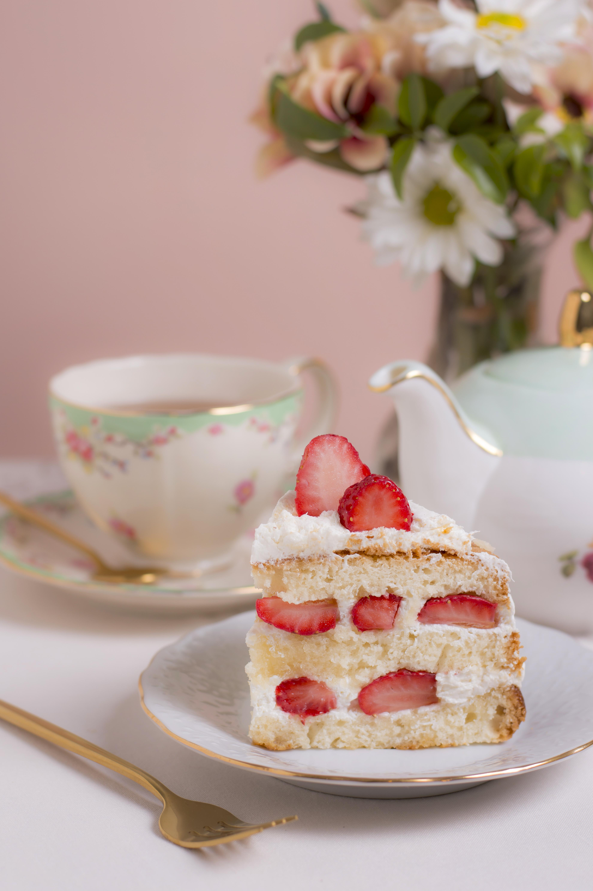

Strawberry Lemonade Cake

Image by freepik
Description
Will need to make strawberry syrup, the cake, buttercream, and lastly, assemble.
Ingredients
For the Strawberry Reduction:
- 3 cups chopped fresh strawberries (500g)
- ½ cup granulated sugar (100g)
- ¼ cup lemon juice (about 2 lemons)
For the Cake:
- 3 cups all-purpose flour (360g)
- 2 teaspoons baking powder
- ½ teaspoon baking soda
- ½ teaspoon salt
- 1 cup unsalted butter room temperature (227g)
- 2 cups granulated sugar (400g)
- 2 tablespoons lemon zest (about 2 lemons)
- 2 teaspoons vanilla extract
- 4 large eggs
- 1 cup whole milk room temperature (240ml)
- ¼ cup lemon juice (about 2 lemons)
For the Buttercream:
- 2 cups unsalted butter room temperature (454g)
- 8 cups powdered sugar (about 2 pounds/ 900g)
- 6 tablespoons strawberry reduction (80ml)
- 2 tablespoons lemon juice
- 2 to 3 tablespoons heavy cream
Steps
For the Strawberry Reduction
- In a small saucepan, combine the strawberries, sugar, and lemon juice.
- Bring to a simmer over medium-high heat. Cook stirring frequently until the mixture is thickened and jammy, 20 to 30 minutes.
- For a smoother reduction, blend the mixture or press it through a sieve. Transfer to a bowl, loosely cover, and refrigerate until chilled, about 2 hours.
For the Cake:
- Preheat the oven to 350F. Grease three 8-inch round cake pans and line the bottoms with parchment paper.
- In a medium mixing bowl, whisk together the flour, baking powder, baking soda, and salt.
- In a large mixing bowl or the bowl of a stand mixer fitted with the paddle attachment, beat the butter on medium speed until creamy. Add the sugar, lemon zest, and vanilla and beat until light and fluffy, about 5 minutes.
- Add in the eggs, one at a time, beating well after each addition. Stop and scrape down the bowl occasionally during mixing. With the mixer on low speed, gradually add in a third of the flour mixture, followed by half of the milk. Repeat, alternating with the remaining flour and milk. Scrape down the bowl. Add the lemon juice and beat just until combined. Divide the batter among the prepared baking pans.
- Bake for 30 to 35 minutes or until the center of the cakes are springy to the touch and the sides are just starting to pull away from the pans. Allow the cakes to cool in the pans for 20 minutes. Remove and finish cooling on wire cooling racks.
For the Buttercream:
- In a large mixing bowl or the bowl of a stand mixer fitted with the whisk attachment, beat the butter on medium-high speed until very pale and fluffy, about 5 minutes.
- Reduce the speed to low and gradually add in half of the powdered sugar. Beat in the strawberry reduction. Beat in the remaining powdered sugar. Stop occasionally during mixing to scrape down the bowl. Once combined, add the lemon juice and heavy cream and beat on medium-low speed until fluffy, about 1 minute.
For the Assembly:
- Place 2 cups of frosting in a piping bag with a decorative tip.
- Place a cake layer on a cake stand or serving plate.
- Spread ½ cup frosting over the top of the cake layer.
- Pipe a border on the edge.
- Spread 3 tablespoons of strawberry reduction in the middle of the frosting border.
- Top with another cake layer and repeat with frosting and reduction.
- Top with the remaining cake layer.
- Spread the remaining frosting over the sides and top of the cake, and pipe decorations on the cake as desired.
- Garnish with fresh strawberries and lemon zest if desired.
- Chill the cake for 2 hours before slicing.
- The cake can be store at room temperature for up to 4 days ungarnished or in the refrigerator for up to a week.
Recipe from Preppy Kitchen
Home